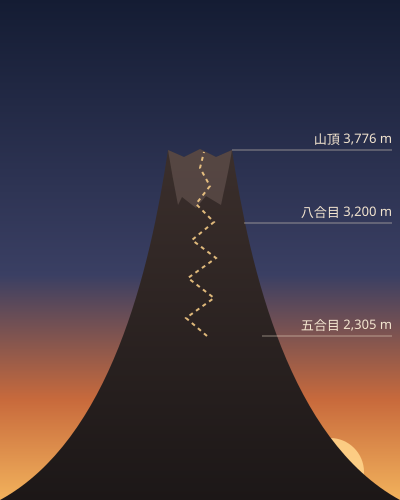

2027 年 7–8 月，日期未定
規劃中：自組或跟團還沒決定，先整理 2024 年以後的資料
兩天一夜，第一天從五合目爬到八合目山屋住一晚，第二天凌晨攻頂看御來光、繞火山口，再下山回五合目。這頁比較自組和跟團的費用、該處理的事，以及 2024–2026 年其他人自組的實際經驗。
只算河口湖車站出發、登頂再回河口湖這兩天，每人。機票、東京到河口湖的交通與住宿兩邊都要另外算。
| 項目 | 商業團（荒野旅人） | 自組 |
|---|---|---|
| 團費／山屋 | NT$17,900 起，含八合目山屋、晚餐、早餐 | ¥15,000–18,000（一晚含兩餐） |
| 河口湖 ⇄ 五合目 | 含 | 巴士來回約 ¥2,800–3,600 |
| 入山費 | 不含，¥4,000 | ¥4,000 |
| 嚮導 | 台灣嚮導兩位 | 無 |
| 保險 | 旅行業責任險 | 自保旅平險，確認登山不在除外條款 |
| 山上水、食物、廁所 | ¥3,000–5,000 | ¥3,000–5,000 |
| 兩天合計 | 約 NT$19,400–20,000 | 約 NT$5,200–6,500 |
| 來源 | 年份 | 方式 | 每人總花費 | 包含 |
|---|---|---|---|---|
| 健行筆記〈走來走去-29〉 | 2024/7 | 自組 4 人，住御來光館 | NT$20,428 | 樂桃機票 NT$10,790、河口湖兩晚、新宿巴士、山屋、金剛杖燒印 |
| VIGHT 部落格 | 2025 | 自組 3 人自駕，當天來回 | 約 NT$10,093 | 機票 NT$6,470、租車、背包客棧一晚、接駁巴士、入山費。沒住山屋、看不到御來光 |
| 87cat（富士宮線估算） | 2026 價格 | 自組估算 | ¥27,060–29,100 | 東京往返交通、五合目巴士、入山費、萬年雪山莊含兩餐；不含機票、保險、飲食、裝備 |
| 87cat 提到的團 | 2027 | 跟團 | NT$17,800（早鳥） | 含東京往返接送、山屋、中文嚮導、旅平險。文章沒寫旅行社名稱，值得比價 |
荒野旅人的團從河口湖車站出發與解散，87cat 提到的團含東京往返，兩者範圍不同。
| 事項 | 商業團 | 自組 |
|---|---|---|
| 山屋訂位 | 旅行社處理，訂不到改走富士宮線（住九合目萬年雪山莊） | 自己搶，開放當天常就額滿。搶不到可透過日本旅行社訂，但貴約 50% |
| 入山預約 | 頁面沒寫誰處理，要問 | 自己在山梨縣官網預約、刷卡繳費 |
| 日期 | 13 個固定梯次，12 人成團 | 自己挑平日、留預備日 |
| 高山症、天候判斷 | 嚮導決定前進或撤退 | 自己判斷 |
| 裝備 | 頁面沒提租借 | 自備或租借，整套約 ¥10,000–20,000 |
| 取消 | 出發前 31 天以上不扣錢；天候無法登頂不退費 | 依各山屋規定；入山費預約日兩天後不退 |
關東梅雨季平年 7/19 左右結束，之後約十天天氣最穩。避開海之日三連休和盂蘭盆節，山屋盡量排週一到週四晚上。
| 日期 | 事件 | 影響 |
|---|---|---|
| 7/1–7/16 | 梅雨季，山頂 7/10 才開放 | 常下雨，山頂設施可能還沒全開 |
| 7/17（六）– 7/19（一） | 海之日三連休 | 很擠 |
| 7 月下旬起 | 日本中小學暑假 | 週末變多人，平日還好 |
| 8/7 – 8/17 | 山之日 8/11（三）、盂蘭盆節 8/13（五）– 8/16（一） | 全年最擠 |
| 8 月下旬 | 人潮減少 | 颱風、午後雷雨機率較高，山頂清晨更冷 |
| 評價 | 梯次 |
|---|---|
| 推薦 | 7/22–23（四五）、7/28–29（三四）、8/23–24（一二）、8/26–27（四五） |
| 普通 | 7/13–14（梅雨季）、7/25–26（日一）、8/9–10（接近盂蘭盆節）、8/30–31（較冷、颱風） |
| 避開 | 7/16–17、7/31–8/1、8/12–13、8/15–16、8/20–21 |
價格主要來自樂樂日本 2025 年初的整理（文章沒標價格年度），另附 2024–2026 年其他來源的報價。標色的是 3,200 m 以上、適合隔天凌晨攻頂的山屋。
| 山屋 | 位置 | 標高 | 收容 | 1 泊 2 食 | 素泊 | 其他報價 | 電話 |
|---|---|---|---|---|---|---|---|
| 佐藤小屋 | 五合目 | 2,230 m | 100 | ¥12,000 | ¥8,500 | 090-3133-2230 | |
| 富士山みはらし | 五合目 | 2,305 m | 46 | ¥9,600 | ¥7,500 | 0555-72-1266 | |
| 富士急雲上閣（膠囊） | 五合目 | 2,305 m | 42 | — | ¥7,700 | 0555-72-1355 | |
| 里見平星観荘 | 六合目 | 2,325 m | 100 | ¥13,000 | ¥10,000 | 0555-24-6090 | |
| 花小屋 | 七合目 | 2,700 m | 150 | — | — | 以電話預約為主 | 090-7234-9955 |
| 日の出館 | 七合目 | 2,720 m | 150 | ¥9,900 | ¥7,700 | 0555-24-6522 | |
| 七合目トモエ館 | 七合目 | 2,740 m | ~100 | ¥13,000 | — | 0555-24-6521 | |
| 鎌岩館 | 七合目 | 2,790 m | ~48 | ¥14,500 | — | 080-1299-0223 | |
| 富士一館 | 七合目 | 2,800 m | 130 | ¥15,000 | — | 080-1036-6691 | |
| 鳥居荘 | 本七合目 | 2,900 m | 250 | ¥15,400 | ¥11,000 | 0555-84-2050 | |
| 東洋館 | 七合目 | 3,000 m | 350 | ¥15,400 | — | 2026 大部屋平日 ¥9,000、週五假日 ¥10,000（yama-nikki） | 0555-22-1040 |
| 太子館 | 八合目 | 3,100 m | 350 | ¥15,000 | — | 熱門、容易額滿 | 0555-24-6516 |
| 蓬莱館 | 八合目 | 3,150 m | 180 | ¥16,000 | — | 0555-24-6515 | |
| 白雲荘 | 八合目 | 3,200 m | 300 | ¥15,000 | — | 2024 ¥13,000–15,000；荒野旅人團住這裡 | 0555-24-6514 |
| 元祖室 | 八合目 | 3,250 m | 250 | ¥15,000 | — | 2024 ¥13,000–15,000 | 0555-24-6513 |
| 本八合目富士山ホテル | 本八合目 | 3,400 m | 350 | ¥14,500 | ¥11,800 | 0555-24-6512 | |
| 本八合目トモエ館 | 本八合目 | 3,400 m | 250 | ¥14,000 | — | 2024 ¥12,000–14,000，有插座、單間，網路付款有折扣 | 0555-24-6511 |
| 御来光館 | 八合五勺 | 3,450 m | 90 | ¥15,000 | ¥13,000 | 2026 含兩餐 ¥16,000、素泊 ¥14,000；離山頂最近 | 0555-73-8815 |
| 山屋 | 位置 | 標高 | 收容 | 1 泊 2 食 | 素泊 | 電話 |
|---|---|---|---|---|---|---|
| 新六合目宝永山荘 | 新六合目 | 2,493 m | 50 | ¥11,000 | ¥9,000 | 090-7607-2232 |
| 六合目雲海荘 | 六合目 | 2,500 m | 50 | ¥11,000 | ¥9,000 | 090-2618-2231 |
| 新七合目御来光山荘 | 新七合目 | 2,780 m | 130 | ¥15,500 | ¥13,500 | 090-4083-2233 |
| 元祖七合目山口山荘 | 七合目 | 3,010 m | 100 | ¥13,000 | ¥11,000 | 090-7022-2234 |
| 八合目池田館 | 八合目 | 3,250 m | 180 | ¥13,000 | ¥11,000 | 090-2772-2235 |
| 九合目萬年雪山荘 | 九合目 | 3,460 m | 200 | ¥13,000 | ¥11,000 | 090-7025-2236 |
| 九合五勺胸突山荘 | 九合五勺 | 3,590 m | 100 | ¥12,000 | ¥10,000 | 090-5855-8759 |
| 頂上富士館 | 山頂 | 3,740 m | 100 | ¥12,000 | ¥10,000 | 0544-26-1519 |
萬年雪山莊 2026 年報價：含兩餐 ¥14,500、一餐 ¥13,500、素泊 ¥12,500（87cat）。荒野旅人的備案也是住這間。
整理日期 2026/11/17。2027 年的價格、訂位日期與規定都要出發前再確認。